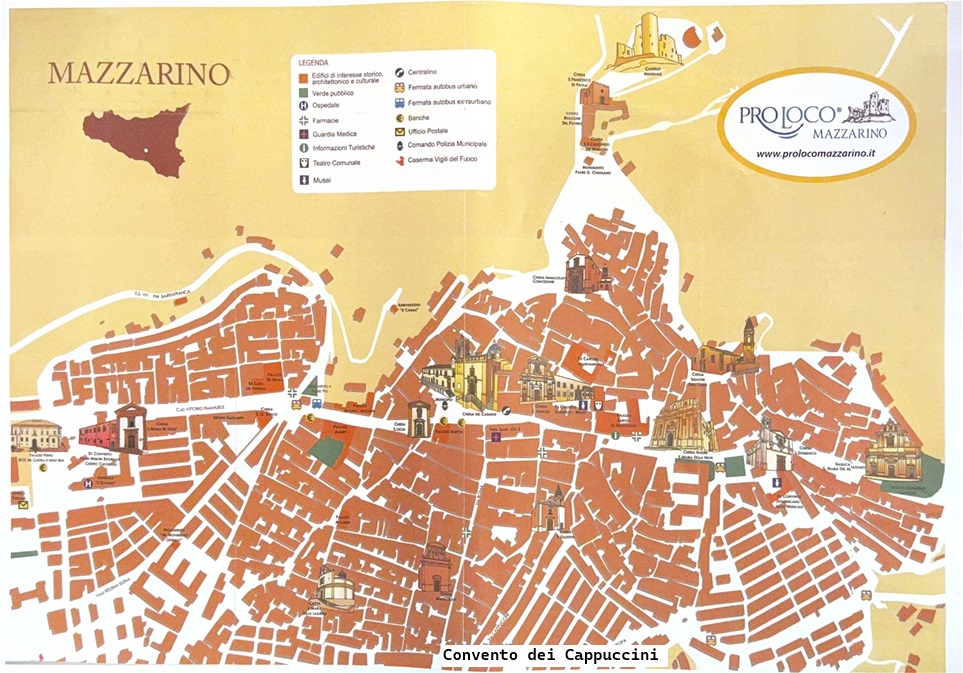

Conventi e Chiostri di Mazzarino
Conventi e Chiostri
- Convento dei Cappuccini
- Ex convento dei Carmelitani
- Convento dei Frati Domenicani e Chiesa di San Domenico
- Chiesa di Santa Maria di Gesù
- Collegio dei padri geusiti e Chiesa di Sant'Ignazio
Nel cuore della Sicilia, Mazzarino custodisce un ricco patrimonio storico e architettonico, con antichi chiostri e conventi che raccontano secoli di tradizione religiosa e culturale. Tra questi spiccano il Convento dei Cappuccini, con il suo chiostro quadrangolare e la suggestiva chiesa di San Francesco, e l’Ex Convento dei Carmelitani, oggi sede del Municipio. Il Convento dei Domenicani, risalente al XV secolo, e la Chiesa di Santa Maria di Gesù completano un itinerario alla scoperta dell’arte sacra e della storia locale. Luoghi di pace e bellezza, i chiostri di Mazzarino sono veri gioielli da scoprire.
clicca sui chiostri e sui conventi per visualizzare le infomazioni
